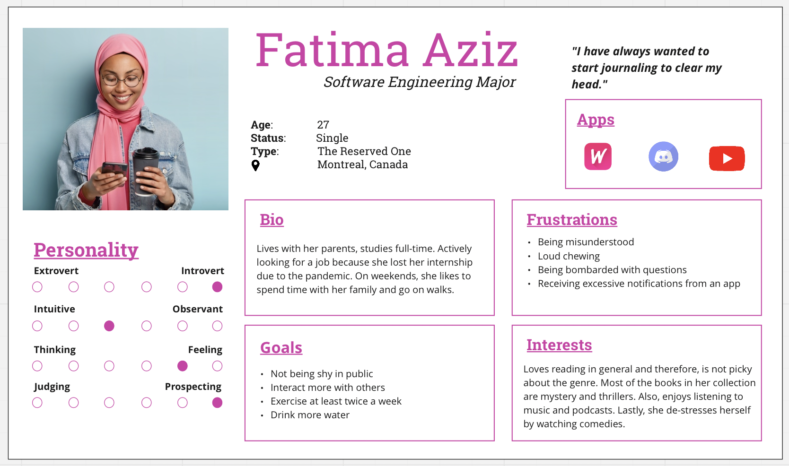
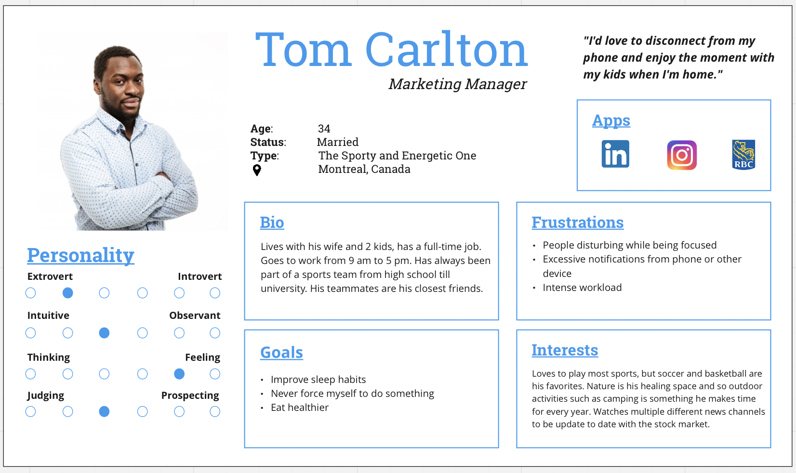

Analysis
Personas




Yasaman Fahm - 40030571 Neerujah Ledchumanan - 40054835 Muhamad Nurie - 40089454
Human history is often divided into pre and post industrial revolution, but in the future the distinguishing landmark will probably be the advent and prevalence of computers. Computers have revolutionized the way humans react with their external selves, including other humans. But recently, the adverse effects of computers, and particularly screen time, on human mental and physical health are under increased scrutiny. Over half the population admits excessive use of their smartphones. The problem is particularly grave amongst teens and young-adults, leading to problems like anxiety, poor posture, sleep issues, weight gain, risk of heart disease, and more at perturbingly younger ages.
The goal is to design an app that promotes a healthier lifestyle for the adults, while ensuring healthier screen habits. It is a strangely paradoxical task to design an app that the users spend time operating, and yet that aims to reduce the screen time users spend. The challenge grows in the face of covid where screen time often provides the only outlet for users to interact with friends and family, an aspect undoubtedly paramount to better mental health, and one of the few sources of entertainment.
Any and all design solutions should always address the problem of increased screen time. It would be easy to just pack the app with features aimed at promoting a healthier lifestyle, like bombardment of notifications to log activities, track mental health or suggestions like journaling. However, this defeats the purpose as the user must spend an increased amount of time using the app. Instead we aim to identify the absolutely crucial tasks that the users must engage in, which would ensure the highest amount of time away from the screens, and yet would have the highest positive impact on mental and physical health.
As we were discussing possible design and feature ideas, we went through multiple iterations to perfect a solid foundation for LUMI. The sketches allowed us to have a concrete idea of basic designs such as navbar, calendars, checklists, and covers for our main pages.
The wireframes below is simply an extension of the sketches made earlier. They were created right after finalizing the layout for several components and had a deeper understanding of the features LUMI will provide.
The user flow was a useful visual representation that we created to answer both logical and design concerns. There were many questions posed during team discussions to comprehend and be mindful of the user experience. The diagram was formed while responding to concerns such as: logical flow between frames, creative transitions that might confuse users, and avoiding an overwhelming amount of menu options.
We agreed the color blue which is the theme for LUMI incorporates the following hues. White complements the darker shades of our palette. Blue is a calming color that promotes serenity and stability. It also symbolizes wisdom, depth of understanding, and introspective journey.


We chose the font to be Open Sans because it is minimalistic and legible.